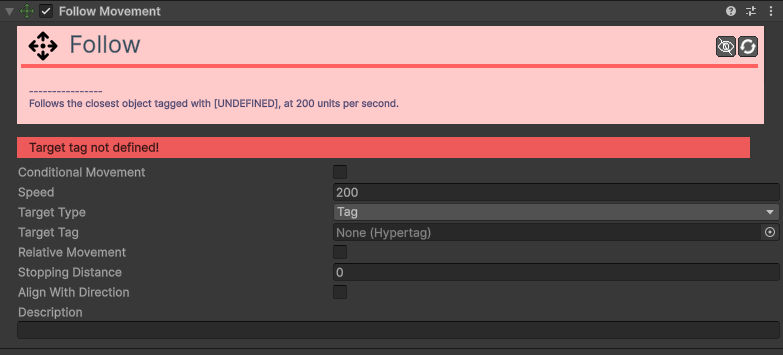
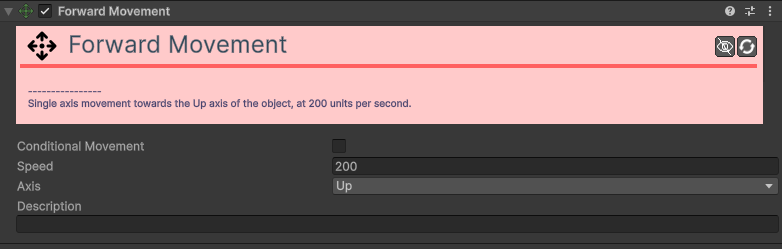
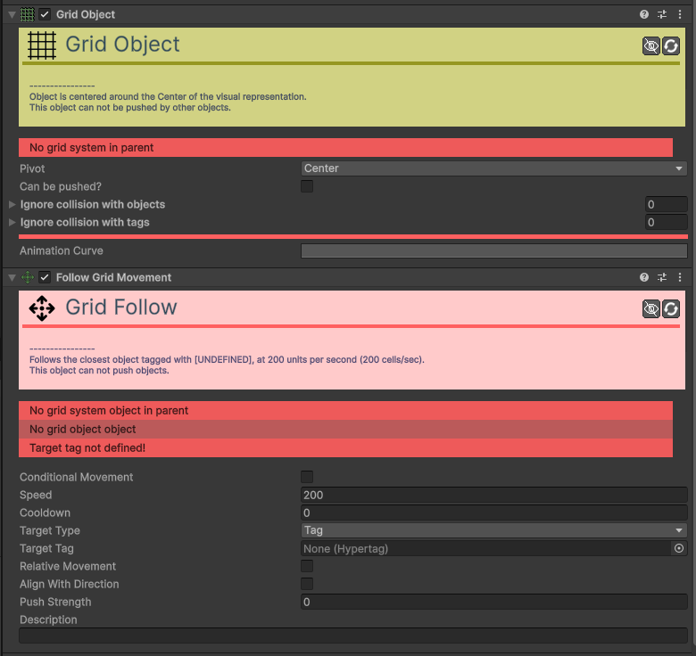
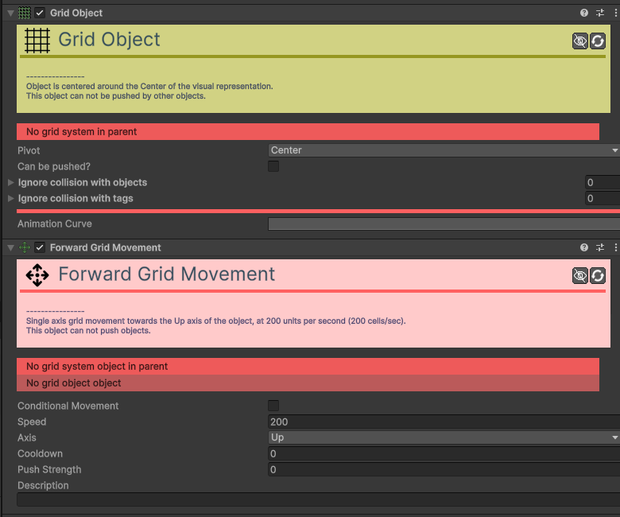
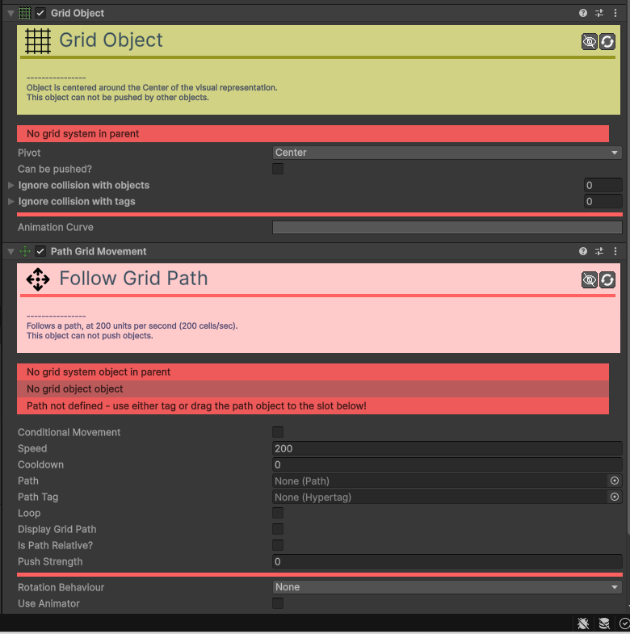
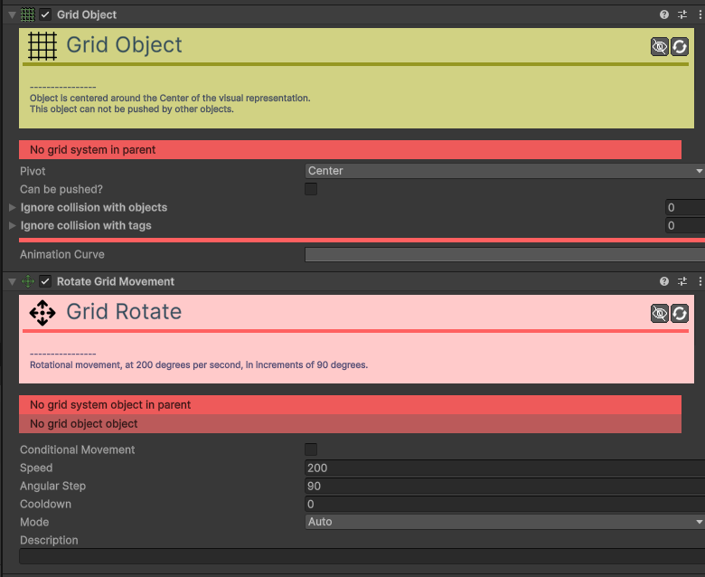
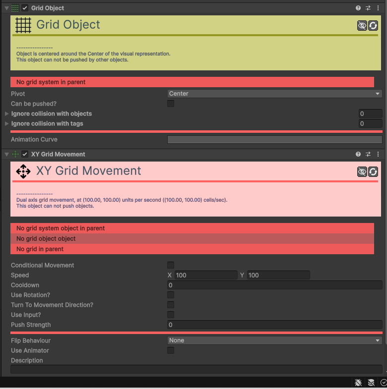
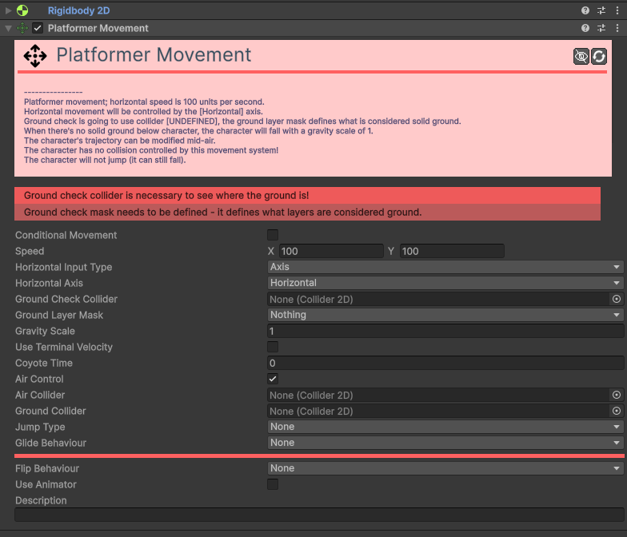

Movement
Os componentes de Movement definem como os seus objetos se deslocam e interagem fisicamente com o mundo do jogo.
Follow Movement
Faz com que o objeto persiga continuamente um alvo (objeto, tag ou rato).

| Campo | Descrição | Detalhes |
|---|---|---|
| Conditional Movement | Ativa o movimento condicional. | Se ativado, este movimento só afetará o objeto se as condições definidas forem cumpridas. |
| Conditions | Condições de ativação. | Visível apenas se Conditional Movement estiver ativo. |
| Speed | Velocidade máxima. | Rapidez de deslocação em pixéis por segundo. |
| Target Type | Tipo de Alvo. | Tag: Segue o objeto mais próximo com a etiqueta definida. Object: Segue um objeto ligado diretamente. Mouse: Segue o cursor do rato. |
| Target Tag | Etiqueta do Alvo. | Visível se o tipo for Tag. Define qual a Hypertag a perseguir. |
| Target Object | Objeto Alvo. | Visível se o tipo for Object. Arraste o objeto para aqui. |
| Camera Tag / Object | Câmara. | Visível se o tipo for Mouse. Necessário para converter a posição do rato no ecrã para o mundo do jogo. |
| Relative Movement | Movimento Relativo. | Se ativo, o objeto preservará a distância e ângulo iniciais em relação ao alvo. |
| Stopping Distance | Distância de Paragem. | Distância mínima ao alvo para o objeto parar de se mover. |
| Align With Direction | Alinhar com a Direção. | Se ativo, o objeto rodará automaticamente para apontar na direção do movimento. |
| Alignment Axis | Eixo de Alinhamento. | Define se a "frente" do objeto é o seu eixo Right ou Up. |
| Max Rotation Speed | Vel. Rotação Máxima. | Rapidez máxima de rotação suave em graus por segundo. |
| Description | Notas do utilizador. | Campo para anotações internas. |
Forward Movement
Faz com que o objeto se mova continuamente na sua direção "frente" (Right ou Up). Ideal para projéteis.

| Campo | Descrição | Detalhes |
|---|---|---|
| Conditional Movement | Ativa o movimento condicional. | Se ativado, este movimento só afetará o objeto se as condições definidas forem cumpridas. |
| Conditions | Condições de ativação. | Visível apenas se Conditional Movement estiver ativo. |
| Speed | Velocidade de movimento. | Define a rapidez com que o objeto se desloca, em pixéis por segundo. |
| Axis | Eixo frontal. | Define qual o eixo do objeto que deve ser considerado a "frente": Right (Eixo X) ou Up (Eixo Y). |
| Description | Notas do utilizador. | Um campo de texto para adicionar notas ou descrições internas sobre a função deste componente no jogo. |
Grid Follow Movement
Faz com que o objeto persiga um alvo movendo-se casa a casa numa grelha.

| Campo | Função | Detalhes |
|---|---|---|
| Speed | Velocidade. | Rapidez de movimento entre células. |
| Target Type | Tipo de Alvo. | Tag, Object ou Mouse. |
| Cooldown | Cooldown. | Tempo de espera entre cada movimento de casa. |
| Rotate Towards | Orientação. | Roda para a direção do movimento na grelha. |
Grid Forward Movement
Move o objeto continuamente na sua direção "frente" através da grelha.

| Campo | Função | Detalhes |
|---|---|---|
| Speed | Velocidade. | Rapidez de deslocação entre células. |
| Cooldown | Cooldown. | Tempo de espera entre cada salto de casa. |
| Align Axis | Eixo Frontal. | Define qual o eixo é a frente (Right ou Up). |
Grid Path Movement
Faz com que o objeto siga um caminho pré-definido (Path) movendo-se casa a casa.

| Campo | Função | Detalhes |
|---|---|---|
| Speed | Velocidade. | Rapidez de movimento entre células. |
| Path | Caminho. | O objeto Path que define a trajetória. |
| Loop | Repetir. | Se deve voltar ao início ao terminar o caminho. |
| Cooldown | Cooldown. | Tempo de espera entre cada movimento. |
Grid Rotate Movement
Controla a rotação de um objeto em incrementos fixos (ex: 90º), mantendo o alinhamento com a grelha.

| Campo | Função | Detalhes |
|---|---|---|
| Speed | Velocidade. | Rapidez da animação de rotação. |
| Step Size | Passo Angular. | O ângulo de cada "salto" (ex: 90 para as 4 direções cardinais). |
| Mode | Modo. | Auto, Input, Target, Movement. |
| Cooldown | Cooldown. | Tempo mínimo entre rotações. |
Grid XY Movement
Permite controlar um objeto na grelha nos eixos X e Y.

| Campo | Função | Detalhes |
|---|---|---|
| Speed | Velocidade. | Rapidez de movimento entre células. |
| Cooldown | Cooldown. | Intervalo mínimo entre movimentos. |
| Input Type | Controle. | Como o jogador controla o objeto (Axis, Button, Key). |
| Push Strength | Empurrão. | Permite empurrar outros Grid Objects. |
Path Movement
Faz com que o objeto siga uma trajetória pré-definida.
| Campo | Função | Detalhes |
|---|---|---|
| Path | Caminho. | Referência ao objeto Path a seguir. |
| Speed / Duration | Velocidade. | Define se o objeto segue a uma velocidade fixa ou se demora um tempo fixo a percorrer o caminho. |
| Loop | Repetir. | Se ativo, o objeto volta ao início quando chegar ao fim do caminho. |
| Rel. / Abs. | Relativo. | Relative: O caminho começa na posição atual. Absolute: Teletransporta para o início do caminho. |
| Rot. Behaviour | Orientação. | Define se o objeto roda para alinhar com o caminho (Align X ou Align Y). |
Platformer Movement
Cria mecânicas de plataformas 2D com saltos, gravidade e colisão com o chão.

| Campo | Descrição | Detalhes |
|---|---|---|
| Conditional Movement | Ativa o movimento condicional. | Se ativado, este movimento só afetará o objeto se as condições definidas forem cumpridas. |
| Conditions | Condições de ativação. | Visível apenas se Conditional Movement estiver ativo. |
| Speed | Velocidade e Salto. | X: Velocidade horizontal máxima. Y: Força inicial do salto. |
| Horizontal Input Type | Controlo Horizontal. | Método de input: Axis, Button ou Key. |
| Ground Check Collider | Detetor de Chão. | Colisor no fundo do personagem que deteta se ele está no chão. |
| Ground Layer Mask | Camada do Chão. | Define quais as camadas que são consideradas superfícies sólidas. |
| Gravity Scale | Escala de Gravidade. | Define o peso do personagem (multiplica a gravidade global). |
| Use Terminal Velocity | Velocidade Máxima. | Se ativo, limita a velocidade máxima de queda. |
| Terminal Velocity | Vel. Máx. Queda. | O valor máximo da velocidade de queda. |
| Coyote Time | Tolerância de Queda. | Tempo durante o qual ainda se pode saltar após sair de uma plataforma. |
| Air Control | Controlo no Ar. | Se ativo, o jogador pode mudar de direção enquanto salta ou cai. |
| Air Collider | Colisor de Ar. | Colisor usado quando o personagem não está no chão. |
| Ground Collider | Colisor de Chão. | Colisor usado quando o personagem está no chão. |
| Jump Type | Tipo de Salto. | None, Fixed ou Variable (depende de quanto tempo a tecla é premida). |
| Jump Input Type | Controlo de Salto. | Método de input para o salto. |
| Max Jump Count | Número de Saltos. | Define se o jogador pode fazer saltos duplos, triplos, etc. |
| Jump Buffering Time | Janela de Salto. | Executa o salto automaticamente se premido pouco antes de aterrar. |
| Jump Max. Hold Time | Tempo de Salto Variável. | Tempo máximo que se pode segurar a tecla para saltar mais alto. |
| Glide Behaviour | Comportamento Planar. | None, Enabled ou Timer. |
| Glide Input Type | Controlo Planar. | Método de input para planar. |
| Glide Max. Time | Tempo Máx. Planar. | Visível no modo Timer. |
| Max Glide Speed | Velocidade ao Planar. | Velocidade máxima de descida enquanto plana. |
| Flip Behaviour | Inversão de Sprite. | Reação visual do sprite ao mudar de direção. |
| Use Animator | Usar Animador. | Se ativo, envia dados para um Animador. |
| Animator | Animador. | Referência ao componente Animator. |
| Description | Notas do utilizador. | Campo para anotações internas. |
Rotate Movement
Controla a rotação de um objeto, seja de forma automática, por input ou mirando um alvo.
| Campo | Função | Detalhes |
|---|---|---|
| Speed | Velocidade. | Rapidez de rotação em graus por segundo. |
| Mode | Modo. | Auto, Input Set, Input Delta, Target, Movement. |
| Axis to Align | Eixo. | Qual o eixo do objeto aponta para o destino (Up ou Right). |
| Input Type | Controle. | Como o jogador controla a rotação. |
XY Movement
Permite controlar o movimento de um objeto nos eixos X (horizontal) e Y (vertical).
| Campo | Descrição | Detalhes |
|---|---|---|
| Conditional Movement | Ativa o movimento condicional. | Se ativado, este movimento só afetará o objeto se as condições definidas forem cumpridas. |
| Conditions | Condições de ativação. | Visível apenas se Conditional Movement estiver ativo. |
| Speed | Velocidade máxima. | Rapidez máxima de deslocação em unidades do mundo (pixéis) por segundo. |
| Limit Speed? | Limitar velocidade? | Se ativo, limita a velocidade total em movimentos diagonais. |
| Maximum Speed | Velocidade Máxima Absoluta. | Visível apenas se Limit Speed? estiver ativo. |
| Use Rotation? | Usar Rotação? | Se ativo, as velocidades X e Y são relativas à rotação do objeto. |
| Turn To Movement Direction? | Virar para a Direção? | Se ativo, o objeto rodará automaticamente para a direção do movimento. |
| Axis to align | Eixo a alinhar. | Define se o objeto aponta para a "frente" com o seu eixo Right ou Up. |
| Max turn speed | Vel. rotação máx. | Velocidade máxima de rotação suave em graus por segundo. |
| Use Input? | Usar Input? | Define se o movimento é controlado pelo jogador. |
| Use Inertia? | Usar Inércia? | Se ativo, o objeto ganha e perde velocidade gradualmente. |
| Stop Time | Tempo de paragem. | Tempo que o objeto demora a parar completamente. |
| Input Type | Tipo de Input. | Método de controlo: Axis, Button ou Key. |
| Flip Behaviour | Comportamento de Inversão. | Reação visual do sprite ao mudar de direção. |
| Use Animator | Usar Animador. | Se ativo, controla parâmetros num Animator. |
| Animator | Animador. | Referência ao componente Animator. |
| Description | Notas do utilizador. | Campo para anotações internas. |